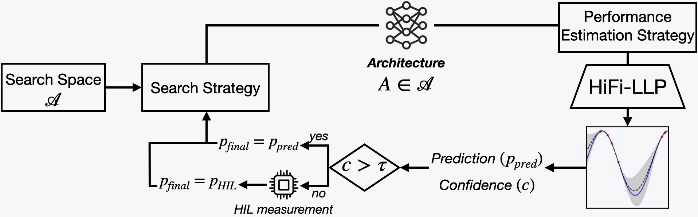
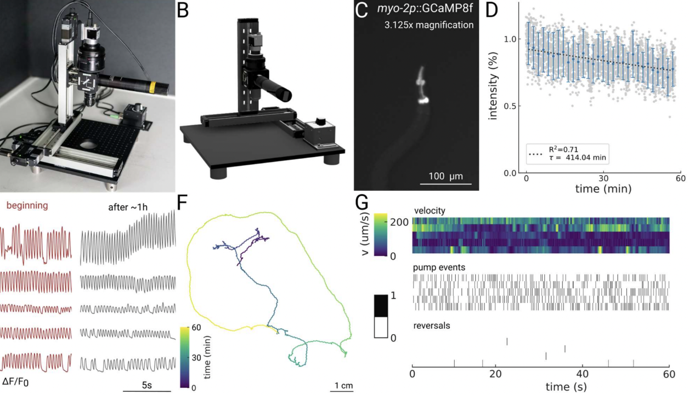

Behzad Shomali
I'm currently pursuing a PhD at the University of Bonn with a focus on reasoning in large language models (LLMs), particularly in multilingual contexts.
Over the years, I've worked across both academia and industry, gaining experience in research, applied machine learning, and effective collaboration. This has included publishing research papers, building machine learning applications, and collaborating across interdisciplinary teams.
My Master's thesis at BMW Group focused on developing a probabilistic latency predictor for neural architecture search (NAS). Before that, at FEV Group in collaboration with RWTH Aachen University, I worked on building LLM-based AI assistants for coding environments. Earlier in my career, during my time at the Max Planck Institute, I was involved in analyzing high-dimensional scans of the C. elegans brain.
Over the years, I've worked across both academia and industry, gaining experience in research, applied machine learning, and effective collaboration. This has included publishing research papers, building machine learning applications, and collaborating across interdisciplinary teams.
My Master's thesis at BMW Group focused on developing a probabilistic latency predictor for neural architecture search (NAS). Before that, at FEV Group in collaboration with RWTH Aachen University, I worked on building LLM-based AI assistants for coding environments. Earlier in my career, during my time at the Max Planck Institute, I was involved in analyzing high-dimensional scans of the C. elegans brain.
📢News
08.2025
Our paper "HiFi-LLP: High-Fidelity, Low-Cost Latency Predictors with Confidence for Robust HW-NAS" got accepted at 38th IEEE International System-on-Chip Conference (SOCC 2025)!
08.2025
I started my PhD studies at the University of Bonn.
07.2025
I've officially graduated with a Master's degree in Computer Science from the University of Bonn.
03.2025
I submitted my Master's thesis at the University of Bonn, conducted at BMW: "High-Fidelity, Sample-Efficient Latency Predictor for Hybrid Hardware-Aware NAS"
🔬Featured Research

